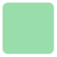

语法：
border-radius:长度值(4个数值);
说明：
border-radius是向元素添加圆角边框。
使用方法：
border-radius:10px; /*所有角都使用半径为10px的圆角*/
border-radius:5px 4px 3px 2px; /*四个半径值分别是左上角，右上角，右下角，左下角，顺时针*/
border-radius属性派生子属性:
border-top-right-radius：右上角
border-bottom-right-radius：右下角
border-bottom-left-radius：左下角
border-top-left-radius：左上角
单位可以用百分比或者em，但兼容性目前还不太好
兼容性：
- 浅绿 = 支持
- 红色 = 不支持
- 粉色 = 部分支持
| Values | IE | Firefox | Chrome | Safari | Opera | iOS Safari | Android Browser | Android Chrome |
|---|---|---|---|---|---|---|---|---|
| Basic Support | 6.0-8.0 | 2.0-12.0 -moz- #1 |
4.0-43.0 -webkit- |
3.1-8.1 -webkit- |
10.5-28.0 -webkit- |
3.2-8.1 -webkit- |
2.1-4.4.4 -webkit- |
18.0-40.0 -webkit- |
| 9.0+ | 4.0+ | 5.0+ | 5.0+ | 10.5+ | 4.0+ | 2.2+ | 18.0+ |
- Firefox从13.0开始移除对
-moz-的支持，仅支持标准的border-radius写法，在4.0-12.0区间，两种方式都支持。
事例：
实心上半圆：
方法：把高度设为宽度的一半，并且只设置左上角和右上角的半径元素和高度一致
div{
height:50px;/*是width的一半*/
width:100px;
background:#9da;
border-radius:50px 50px 0 0;/*半径至少设置为height的值*/}
实心圆：
方法：把宽度（width）与高度(height)值设置为一致（也就是正方形），并且四个圆角值都设置为它们值的一半
div{
height:100px;/*与width设置一致*/
width:100px;
background:#9da;
border-radius:50px;/*四个圆角值都设置为宽度或高度值的一半*/ }
